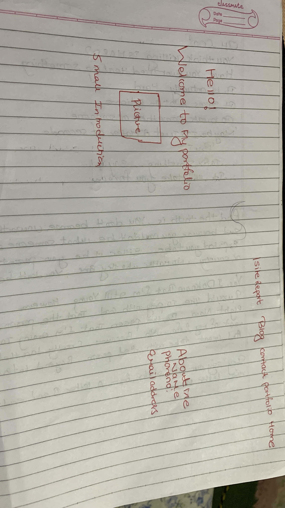

On 25th February, I started my assignment. By learning different slides provided by the university. By watching different videos, sample websites I designed my first layout in my notebook. After that, I started my coding in the sublime text but unfortunately, it was not as simple as I thought. There are a lot of problems that I faced throughout my assignment. University gives us different terms and conditions that we should apply during the assignment. So, I used to read marking schemes before doing my assignment. By taking help from my course tutor, friends I was able to complete my assignment. I had problems and confusion regarding citation and referencing. Later on, I solved my problem by taking help from my tutor. My assignment is going on smoothly. Day by day I am improving my coding quality. University slides, the w3school website, Bishow Raj Poudel a Nepali Technical Youtuber videos help me a lot throughout my assignment. It was a really interesting, challenging assignment for me. I learned many new things from this assignment.
